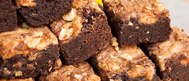
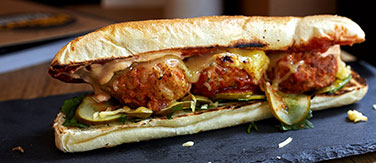
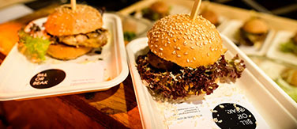
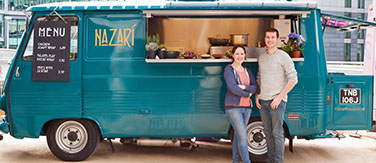
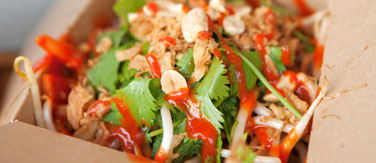

The Food

The finest street food traders London has to offer are brought together under the KERB banner. Depending on your guest numbers you will be able to pick 3-6 of these amazing traders to feed your guests! Prepare to be seriously popular in your office!
-
Anna Mae's
The big-pan mac ‘n’ cheese specialists who serve it up with their homemade BBQ sauces and real Americana toppings.
-
Mother Flipper
This bromley lad does his homework and keeps onpushing for perfection with these Flippin’ tasty burgers. Their 100% beef patties will have your guests queueing from the door!
-

South East Cakery
Hustling up the best brownie bars in London. Salted caramel, Oreo, peanut butter, orange, honeycomb, Nutella... with lots of experiments along the way.
-

The Bowler
This grass covered van is called The Lawn ranger and inside are made meatballs of every persuasion. And The bowler is king of the puns so great taste and great laughs.
-
LUARDOS
The original burrito boy and winners of #TacoWars, their fresh, colourful californian style mexican food is served out of two vintage citroen H vans, Jesus and mary.
-
Dosa Deli
Dosa Deli's mantra: go to India, try everything, bring back the best. Their vegetarian dosas are some of the most exciting and innovative dishes on the street, combining amazing flavors from the country they love.
-

Bill or Beak
Lucy Mee and Josh Patterson present you with a simple question - Bill in a bun, or beak? Bill (slow braised Vietnamese dressed duck with tempura shallots, or Beak: Szechuan Fried chicken with miso mayo, pickled slaw, green chilli, fermented red chilli hot sauce and peanut crumb.
-
Oh My Dog
Joel's the Dogfather, and he has lovingly crafted his pups using prime cuts of outdoor–bred pork, show-stopping toppings and artisan brioche buns. You've probably had a hot dog before, but when was the last time one made you say "Oh My Dog!"
-

Nazari
Dishing up organic fava bean falafel flatreads filled with yoghurt mint garlic tahini, halloumi, almonds and pomegranate seeds, Rob and Victoria Dyas bring Andalusian / Middle Eastern flavour fusion to the streets.
-
Club Mexicana
Welcome to the Club! These guys make seasonal Mexican food, packed full of crazy good fillings, homemade sauces and toppings. And can you keep a secret? Its all vegan.
-
Makatcha
Rendang like no other. Maria and her team are the curry masters, and this one has it all - proper heat, rich, creamy elements, delicious sauces and crunchy sides. Immense.
-

Hanoi Kitchen
Hanoi Kitchen was born from a love of the street food in Vietnam. Back in London, there authentic noodles and baguettes strike the perfect balance between hot, spicy, fresh and fragrant.
-
Bell & Brisket
Salt beef bagels are a truly original london product and they've proudly brought them back to the forefront, modernised and pimped with an inch of their lives!
-
Bian Dang
These guys make classic Taiwanese steam buns and they do it mighty well. Tristan's buns are as delicious as they come. Expect to sample a culinary mash-up of traditional flavours and contemporary processess.
-
Hank’s Po Boys’
There's a reason that their crawfish balls are called crack balls, and these guys deal them hot and heavy. They know what it means (to miss new orleans).
-
MyPie
Ex high-end chef turned pieman extraordinaire of the kerb. These are the real deal - rich fillings, mash so creamy it's criminal, proper gravy. Mashta la vista, baby.
-
Prairie Fire BBQ
Prairie fire BBQ was founded by Michael; a native of Kansas City and St. Louis. He moved to London and instantly fell in love but missed the authentic, slow-smoked Kansas City style BBQ from his home town. Kansas City here we come!
Oliver’s Twist
Vodka, Elderflower Liqueur, Chilli-infused Honey, Lemon Juice, Ginger Ale
Snowballer
Egg Nog, Amontillado sherry, grapefruit juice
Mistletoe Punch
Vodka, Kamm & Sons, Suze, orange, cranberry & clementine juice, vanilla
Christmas Collins
Tea infused white rum, lemon, soda, sugar
Stocking Filler
Tequila, lime, Square Root ‘Citrus Crush’